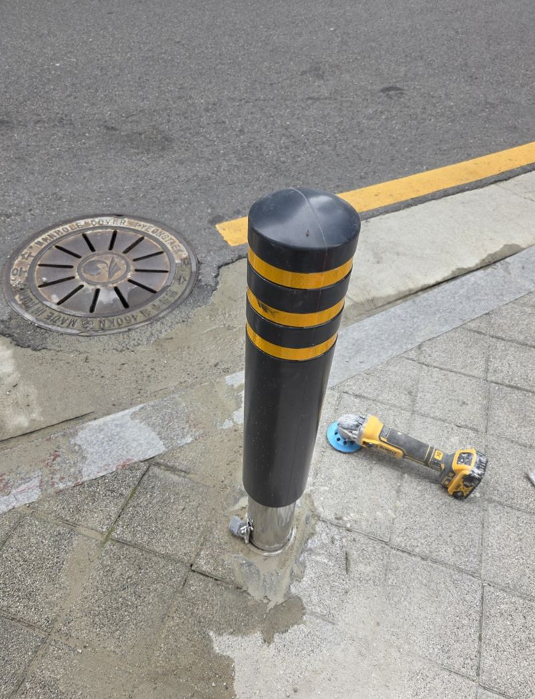
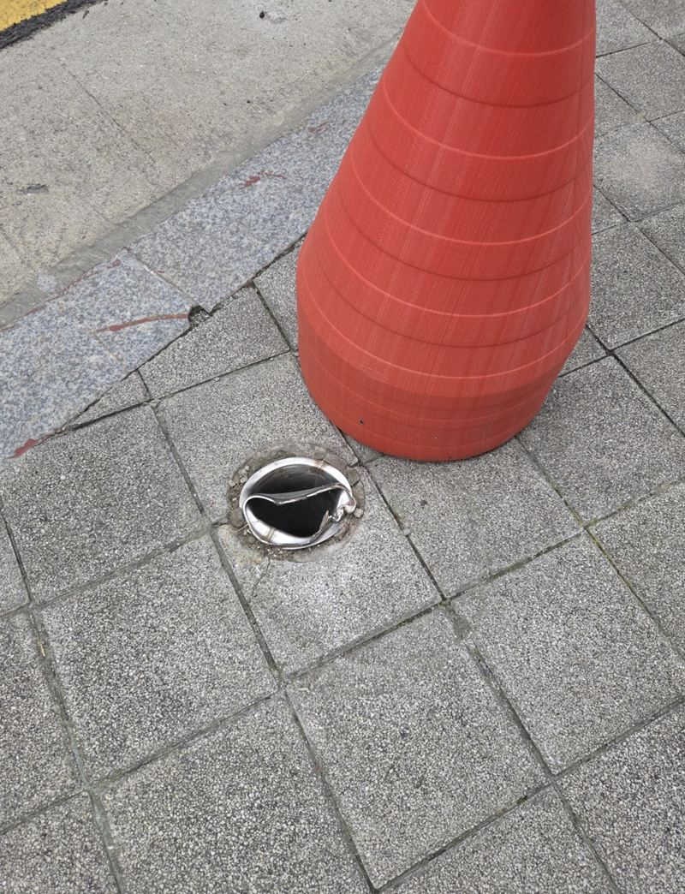
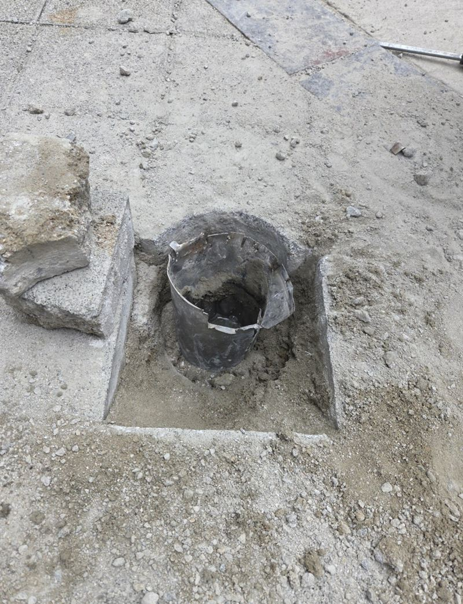
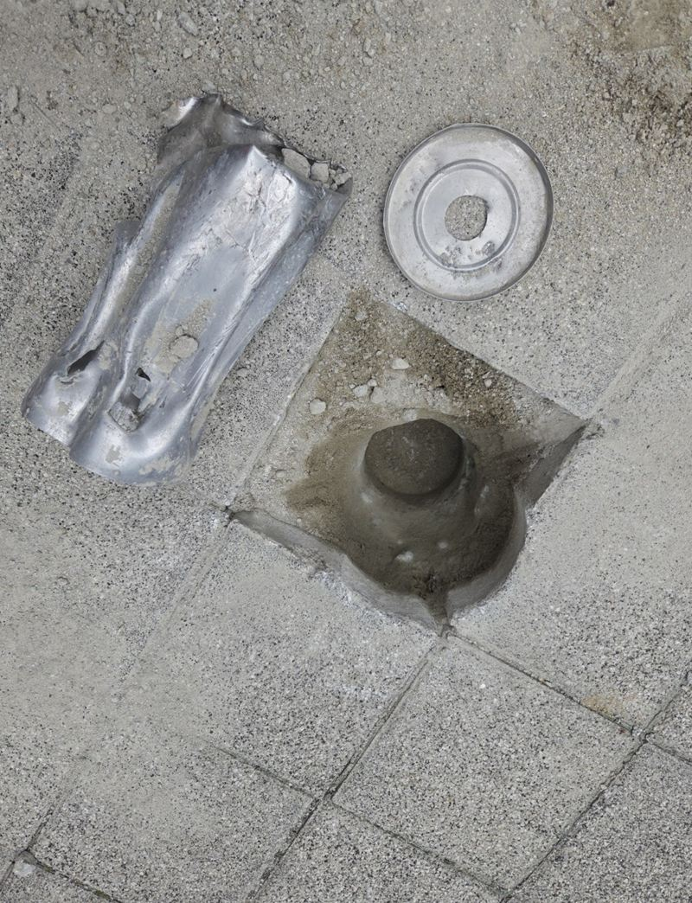
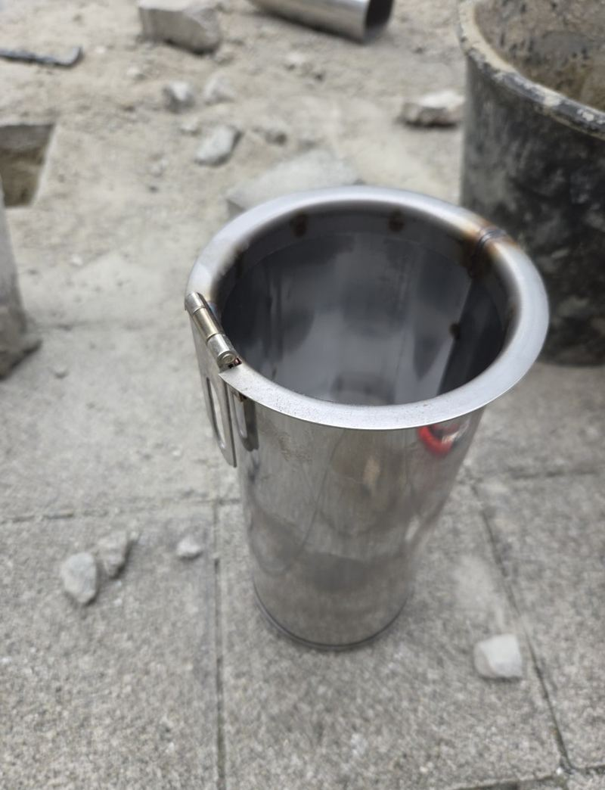
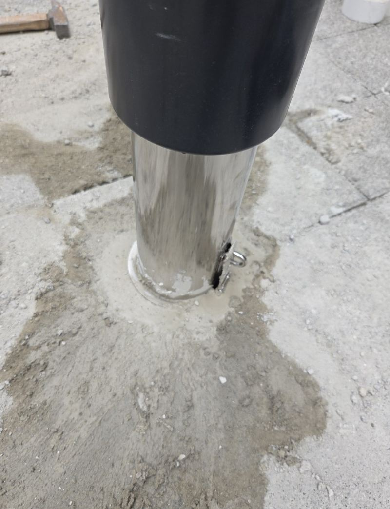
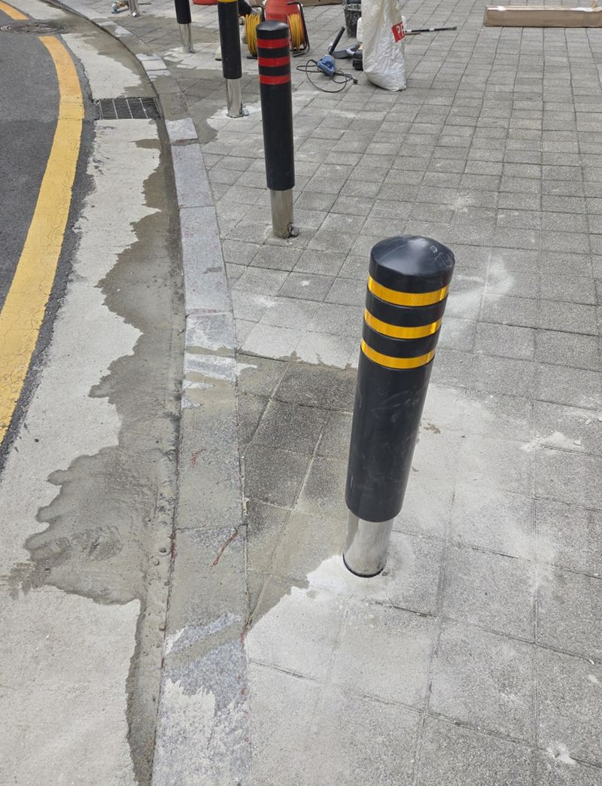

평택 매립 볼라드 파손 시 철거·재시공 방법


재시공 전재시공 후← 밀어서 전후 비교 →
"차가 부딪힌 뒤로 볼라드가 휘었는데, 아래쪽은 바닥에 박힌 채로 안 빠져요." 보도 모서리에 서 있던 매립 볼라드가 차량에 받혀 윗부분은 휘고 밑단은 끊어진 현장이었어요. 문제는 눈에 보이는 기둥이 아니라 바닥 안에 남은 고정부였어요. 땅속에 굳어 있던 옛 브라켓을 먼저 걷어 내고, 새 브라켓을 깊이에 맞춰 넣은 뒤 같은 자리에 다시 세웠어요.
| 현장 | 평택 고덕동 도로변 보도 모서리 |
|---|---|
| 증상 | 우레탄 일자형 매립 볼라드 상부 휨, 하부 절단 |
| 요청 | 위치 변경 없이 기존 자리에 복구 |
| 한 일 | 남은 고정부 철거 → 깊이 재확보 → 새 브라켓 수직 설치 → 몰탈 충전 → 잠금·흔들림 확인 |
바닥 속에 남은 고정부부터 빼내기
매립 볼라드는 바닥에 묻힌 통(브라켓)에 기둥을 꽂고 잠그는 구조예요. 기둥만 다쳤다면 새 기둥을 꽂으면 되지만, 이번엔 밑단이 끊기면서 남은 조각이 브라켓 안에 끼어 버렸어요. 브라켓은 시멘트와 한 몸처럼 굳어 있어 위에서 잡아당겨서는 꿈쩍도 하지 않았어요.


그래서 주변 바닥을 필요한 만큼만 걷어 내고, 고정부가 어디에 걸려 있는지 확인하며 조각을 차례로 떼어 냈어요. 여기서 대충 남겨 두면 새 부품이 끝까지 들어가지 않아 다시 세워도 흔들려요.
같은 자리에 다시 세우는 순서
깊이 다시 확보
옛 브라켓을 들어낸 뒤 새 브라켓이 들어갈 깊이까지 다시 팠어요. 땅속 길이가 모자라면 쓰다가 흔들리거나 잠금이 맞지 않아요.


수직 맞추기
브라켓이 기울면 기둥도 기울어 보여요. 앞뒤·좌우로 수직을 보면서 자리를 잡았어요.
몰탈 충전
브라켓 둘레를 몰탈로 채워 단단히 붙잡았어요.

잠금과 바닥 높이 확인
마른 뒤 기둥을 꽂아 잠금이 제대로 걸리는지, 마감이 바닥보다 솟지 않았는지 봤어요.
몰탈이 잠금부로 들어가면 안 돼요
재시공에서 가장 조심한 부분이에요. 브라켓 안쪽 잠금부로 몰탈이 흘러 들어가면 굳은 뒤 기둥이 뻑뻑해지거나 아예 잠기지 않아요. 바깥은 단단히 채우되, 작동부는 막히지 않게 덮어 두고 작업했어요. 탈착식 볼라드라면 나중에 기둥을 빼야 할 일이 있으니 더 중요해요.

작업을 마친 뒤 고객분은 "겉에 보이는 부분만 바꾸면 되는 줄 알았는데 바닥 안쪽 철거가 더 큰 일이었네요"라고 하셨어요. 같은 자리에 다시 세워진 점과 깨진 바닥이 정리된 점을 특히 좋아하셨어요.
철거·재시공 범위를 정하는 것들
| 상태 | 작업 범위 |
|---|---|
| 기둥만 휨, 브라켓 멀쩡 | 기둥 교체 중심 |
| 밑단 절단, 조각이 끼임 | 고정부 철거 후 재시공 |
| 주변 바닥까지 들뜸 | 바닥 보수 범위 추가 |
차에 받힌 뒤 오래 두면 남은 조각이 더 단단히 박히거나 주변 바닥까지 금이 갈 수 있어요. 휘었을 때 빨리 보는 편이 작업 범위를 줄여요.
매립 볼라드 재시공 질문
다른 제품으로 바꿔 세워도 되나요?
가능해요. 다만 브라켓 규격이 달라지면 구멍 크기와 깊이를 다시 맞춰야 해요.
보도블록은 다시 깔아 주나요?
걷어 낸 자리는 몰탈이나 원래 블록으로 정리해요. 마감 방법은 현장에서 상의해요.
작업 중 통행을 막아야 하나요?
작업 구간만 콘으로 막고 진행해요. 몰탈이 굳는 동안은 기둥을 건드리지 않게 안내해요.
잠금 열쇠도 새로 주나요?
새 제품을 쓰면 그 제품 열쇠를 드려요. 기존 열쇠와 맞는지 미리 확인해요.
여러 개가 한꺼번에 망가졌어요.
개수와 상태를 사진으로 보내 주시면 한 번에 진행할 수 있는지 봐요.
상담 전에 무엇을 준비하면 되나요?
전체 모습, 파손 위치, 바닥에 남은 하부 상태, 차량 통행 여부, 같은 제품으로 할지를 알려주세요.
다른 볼라드 현장
휘거나 끊긴 볼라드와 바닥에 남은 부분을 가까이 찍어 보내 주세요.
전화 상담 010-4517-9872